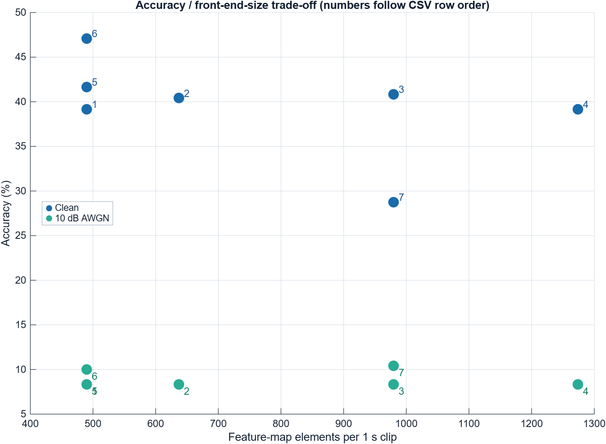

Reference signal path
1 s waveform
20 ms hop
512-point FFT
log compression
DCT
For 16,000 samples, a 480-sample frame and 320-sample hop give 1 + floor((16000 - 480) / 320) = 49 complete frames. TI therefore feeds a DSCNN with [N, 1, 49, 10]: batch, channel, time, and MFCC index.
Controlled question: with the exact same 720/240 speaker-disjoint manifest and manual 5-NN, can a front-end change improve recognition without an unjustified increase in feature-map size?
Measured ablation
| Front end | Shape | Size | Clean | 10 dB |
|---|---|---|---|---|
| TI reference | 49 × 10 | 1.00× | 39.17% | 8.33% |
| 13 MFCC | 49 × 13 | 1.30× | 40.42% | 8.33% |
| 10 ms hop | 98 × 10 | 2.00× | 40.83% | 8.33% |
| 25 ms / 10 ms / 13 MFCC | 98 × 13 | 2.60× | 39.17% | 8.33% |
| TI + pre-emphasis | 49 × 10 | 1.00× | 41.67% | 8.33% |
| TI + cepstral mean normalization | 49 × 10 | 1.00× | 47.08% | 10.00% |
| 20-bin MFSC comparator | 49 × 20 | 2.00× | 28.75% | 10.42% |


What the result means
CMN is the first candidate to carry into DSCNN training; pre-emphasis is a secondary same-size candidate. The noisy collapse is more consequential than the clean ranking. The next controlled phase must train with realistic noise at multiple SNRs and compare TI MFCC, TI+CMN, MFSC, and PCEN under the same seeds and model budget.
Unknown-word recall was only 0–5%, so a continuous system will also require a calibrated rejection rule, false-accepts-per-hour evaluation, and posterior smoothing.
What the course references change
Test 0, 0.4, 0.7, and 0.97; do not assume one speech-textbook value is universal.
Mean/std is a compact diagnostic, while the ordered 49 × 10 map remains the DSCNN input.
Precompute the window, Mel weights, and DCT matrix, then prove numerical equivalence.
Delta and delta-delta make a 3 × 49 × 10 input and must justify the 3× feature cost.
These constraints come from the supplied MFCC appendix and Audio Features chapter. Their examples explain the signal-processing mechanisms, but their emotion, speech/music, and genre results are not treated as performance evidence for this 12-class dataset.
Evidence from the papers
- Rao and Koolagudi, Appendix A motivate bounded pre-emphasis, short overlapping frames, low-order MFCCs, and optional temporal derivatives.
- Giannakopoulos and Pikrakis, Chapter 4 motivate short-term feature sequences, explicit aggregation trade-offs, and precomputed Mel/DCT constants.
- Texas Instruments supplies the 49 × 10 MFCC deployment anchor.
- Wang et al. (IEEE ICASSP) motivate PCEN as dynamic gain control in place of static log compression for noisy and far-field KWS.
- Sorensen et al. use 49-frame MFSCs, realistic noise augmentation, quantization, and continuous-stream posterior handling.
- Peter et al. show that MFCC count must be optimized jointly with network architecture and compute cost.
- Current ScienceDirect survey positions feature optimization alongside architecture, compression, NAS, and deployment.
- Medur et al. (IEEE) compare MFCC/CNN TinyML models on Speech Commands v0.02 with quantization and deployment trade-offs.
Evidence boundary: published numbers are not mixed into this experiment because their datasets, partitions, models, augmentation, and hardware differ. The course-book examples and attached anomaly paper inform method design but study different classification tasks.
Reproducibility
The run writes aggregate and per-class CSV files, both figures, and explicit pass markers. REFERENCE_SHAPE_PASS=1, REFERENCE_REPRO_PASS=1, FINITE_RESULTS_PASS=1, and MFCC_ABLATION_PASS=1 were obtained in MATLAB R2026a Update 4. The verified literature archive contains eight unique readable PDFs with SHA-256 hashes.
These are PC-side single-subset diagnostics. They are not DSCNN accuracy, quantized accuracy, target-MCU latency, RAM, flash, NPU, or energy measurements.